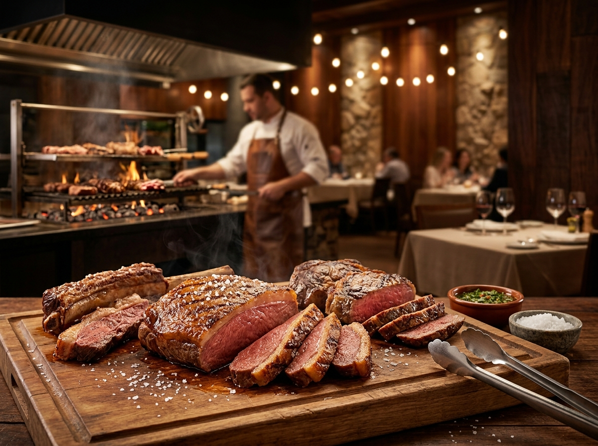
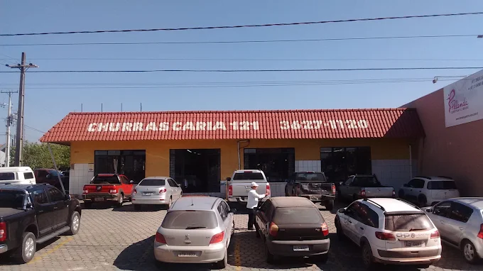
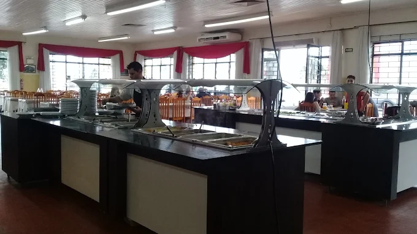
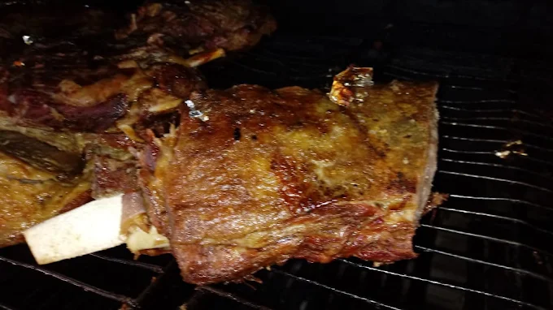
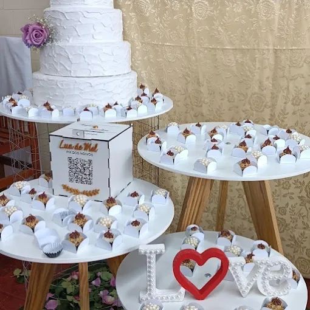

Churrascaria self-service · Fazenda Rio Grande/PR
A churrascaria que atravessou gerações em Fazenda Rio Grande
Carne na brasa, pratos quentes, saladas e sobremesa no self-service. Salão amplo e climatizado, do tamanho do almoço de domingo em família.
4,0 no Google · 1.600 avaliações
Ticket médio R$ 20–40 por pessoa

Salão amplo e climatizado
Espaço pra família inteira, inclusive nos domingos cheios.
Self-service com carne na brasa
Você monta o prato e paga pelo que come.
Casa de tradição
Tem cliente que vem desde criança e hoje traz os próprios filhos.
O que servimos
Buffet completo de churrascaria: carne saindo da brasa, comida quente, saladas e sobremesa no mesmo lugar.
-
Carnes grelhadas
Cortes na brasa, servidos no buffet, sem hora pra acabar.
-
Pratos quentes e saladas
Acompanhamentos, guarnições e saladas pra montar o prato do seu jeito.
-
Sobremesas
Pra fechar o almoço sem precisar sair da mesa.
Salão, para viagem e entrega.
O salão
Ficamos na R. Benito Antonio Baldan, no Pioneiros. Somos daqui há tempo suficiente pra ter virado ponto de encontro de família na região — muita gente que hoje traz os filhos veio pela primeira vez trazida pelos pais.
- Self-service
- Carnes na brasa
- Salão amplo
- Climatizado
- Para viagem
- Entrega




Quem veio, contou
Nota 4,0 no Google, de 1.600 avaliações de quem já veio.
Essa churrascaria faz parte da minha história de vida! Eu já vinha aqui quando era criança, trazido pelos meus pais, guardando memórias incríveis daquela época. Hoje, o local continua sendo sagrado para mim.
Amei o lugar, os funcionários simpáticos e atenciosos. As carnes uma delícia, a comida muito boa.
Bom atendimento, com variedade nos alimentos. Venha você também provar, vale a pena conferir.
Onde estamos
R. Benito Antonio Baldan, 76 – Pioneiros, Fazenda Rio Grande/PRCEP 83833-042
Horário
Horário ainda não confirmado — ligue antes de sair de casa.